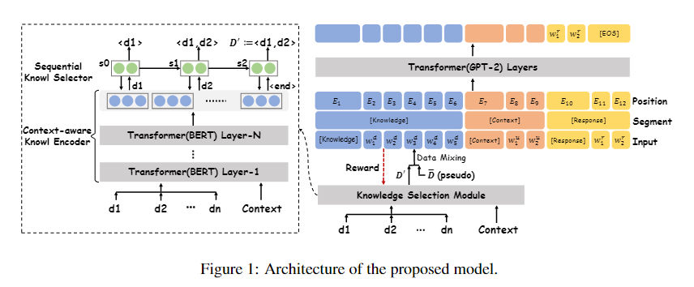
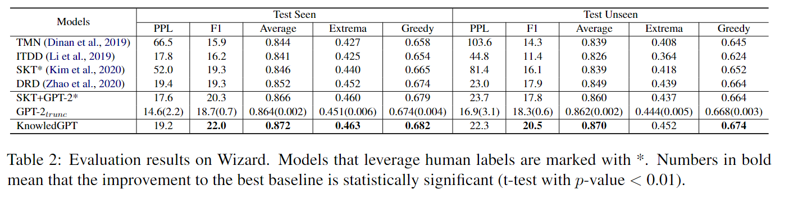
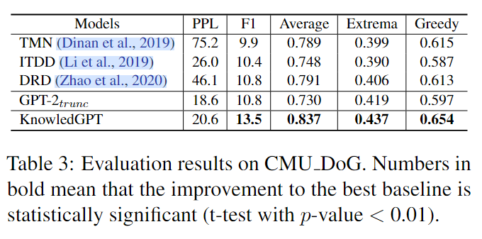
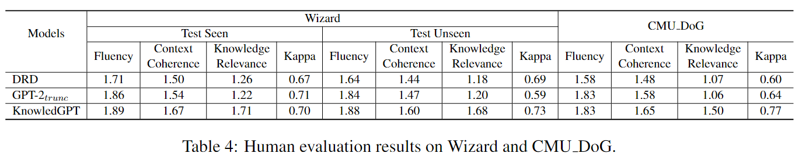
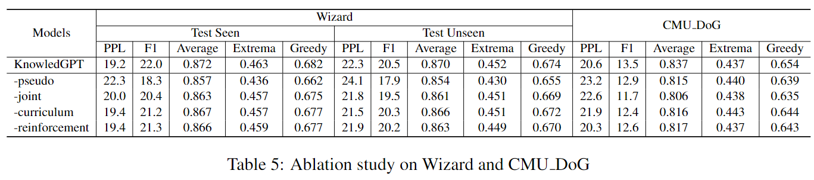
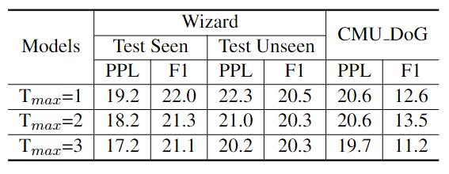

KnowledGPT: 基于预训练语言模型的知识对话
摘要
《Knowledge-Grounded Dialogue Generation with Pre-trained Language Models》是由北大发表的论文，旨在通过预训练的语言模型进行知识对话，论文收录于 EMNLP 2020 主会。代码公开在 zhaoxlpku/KnowledGPT (github.com)。论文通过在预训练语言模型（如 GPT）外配置知识选择模块，从非结构化的知识文本中选择知识，并通过一种无监督的方法联合优化知识选择和知识对话生成。论文提出的 KnowLEDGPT 在 Wizard 和 CMU DoG 两个数据集上的自动 & 人工评估实现了 SOTA。
介绍
数据驱动的开放域对话系统一直饱受通用性、无用回复的问题。当人类参与者试图深入某个特定主题时，这种缺陷尤其严重。虽然预训练模型通过模型扩张、更多的数据改善了这一问题，其可以在训练期间记住足够多的语言模式，但它们仍只能捕获 “平均语义”。当对话需要知识才能进行下去时，除非模型已经在预训练阶段 “见过” 相关知识并以正确的方式存储在参数中且可以正确关联，否则模型生成的回复仍可能是通用无用的。这与人类的真实对话还有着不小的差距。
最近，出现了两条似乎有望弥合差距的研究方向。第一种是大规模的预训练模型，通过模型扩张、大量数据在预训练期间学到足够多的语言模式，缓解通用性回复的问题。然而，这种简单粗暴的方法还是只能捕获数据的 “平均” 语义。当需要特定知识时，生成的回复仍然可能是通用的。
另一种方法是显式地引入外部知识。知识可分为结构化的知识图谱和非结构化的文本（维基百科等）。由于高质量的知识图谱更难获得，而非结构化的文本则更易获得，成本低廉而且数量庞大。然而，这些文本往往长而冗余，而预训练模型往往会受到序列长度的限制。事实上，该问题上，模型容量和处理长输入的能力是冲突的。一方面，在海量的文本上预训练，模型必须设置一个输入上限。另一方面，在回复生成时，需要尽可能多的保留候选知识，以保证相关知识的召回。这一冲突是知识对话生成的基本阻碍。
为了克服这一问题，研究者开始引入知识选择模块，从若干相关知识候选中选择最相关的知识子集，进而显著序列长度。然而，现在的一些方法中，知识选择模块要么与模型强耦合，无法应用在预训练模型中；要么通过人工标注数据训练，成本昂贵。本文提出了一种无监督的方法，将知识选择形式化为基于 BERT 的序列预测任务。通过计算真实回复和候选知识间的相似度作为伪标签，预热模型。再通过强化学习、课程学习的方法，交替更新知识选择模型和回复生成模型。因此，知识选择通过回复生成的反馈得到进一步优化。
论文在 Wizard of Wikipedia 和 CMU Document Grounded Conversations 两个数据集上进行实验。结果表明，模型可以显着优于最先进的方法以及一些以启发式方式使用的预训练模型，达到新的 SOTA。此外，作为副产品，知识选择模块在维基百科向导上的知识选择准确性方面也优于最先进的模型，这意味着其他模型也可以从该组件中受益。
问题定义
- 数据集 \(D=\{(U_i,D_i,r_i)\}_{i=1}^N\)
- \(U_i\) 代表上下文
- \(D_i\) 代表与 \(U_i\) 相关的文档
- \(r_i\) 代表给定 \(U_i\) 上下文，基于 \(D_i\) 的回复
- 目标：\(\max P(r_i|U_i,D_i;\theta)\)
由于论文使用 GPT2 建模此条件概率，因此将上式改写为： \[ \begin{aligned} P(r_i|U_i,D_i)&=P(r_i|g(U,D);\theta)\\ &=\prod_i^{l_r}P(r_i|g(U,D),r_{1:t-1};\theta) \end{aligned} \] \(g(U,D)\) 将知识和上下文结合的模块，包含知识选择。问题就变成了如何定义 \(g(U,D)\) 和如何微调 \(\theta\)。显然，可以直接将 \(D\) 和 \(U\) 直接拼接在一起然后截断，但是这可能会删去重要的知识且引入噪声，进而影响性能。\(g(U,D)\) 的学习面临以下问题：
- 如何对上下文与外部知识之间的相关性进行建模
- 当缺少真实知识标签时如何学习 \(g(U,D)\)
- 如何将 \(g(U,D)\) 和 GPT-2 模型与 D 联合优化，从而使两者相互促进。
方法
模型的架构如下图所示。在 Transformer 架构的基础上，知识选择模块由上下文感知知识编码器和顺序知识选择器组成。知识编码器通过自注意力层捕获上下文 U 和 D 中的每个句子之间的交互模式，然后将这些模式馈送到知识选择器，逐步地解码有用的知识。由于无法获得人工标记，学习方法从充分利用回复构建的伪标记开始，通过强化学习方法和课程学习方法交替优化知识选择和回复生成。

上下文感知知识编码器
虽然名字很玄乎，但是原理很简单。将上下文 \(U_i\) 和每个候选知识 \(d_i\in D_i=(d_1,d_2,\cdots,d_m)\) 分别拼接起来，馈入 BERT，取最后一层的 [CLS] 的向量作为上下文表征。也就是架构图左侧的下半部分。用 \(E=(e_1,e_2,\cdots,e_m)\) 代表编码器的输出，其中 \(e_i\) 代表知识 \(d_i\) 和上下文拼接后的上下文表征。
顺序知识选择器
这里的原理也很简单。前面提到，论文将知识选择视作序列预测任务（而非序列分类）。换而言之，知识选择模块意在顺序地解码出一个知识序列子集。也就是类似 RNN 的自回归方法。这样建模的原因可能是无需额外考虑序列分类时拼接的顺序。
具体而言，这一块有一个 LSTM 解码器组成，输入为编码器的输出序列 \(E\)。解码每一步与输入序列计算 Attention，从知识表征中选择输出，直到输出特殊的结束符号 \(e_{spe}\) 或者序列长度达到上限。另外，在解码时的每一步，需要排除已经输出的知识，显然同一个知识没有必要输出两次。最后得到的解码输出就是选择后的知识序列 \(D'\)，\(g(U,D)\) 定义为 \(U\cup D'\)。
学习策略
由于知识选择器的训练过程是无标签的，这可能会很困难。在最近的一篇论文中（Kim et al., 2020），当人类标签被移除时，知识选择的准确率从 27% 下降到 0.3%。另外，在端到端的模型中，知识选择的结果作为回复生成的输入，二者耦合纠缠。在训练早期，\(g(U,D)\) 可能性能很差，训练噪声传入 GPT-2 再反向传播至 \(g(U,D)\)，可能会导致两边模型效果都很差。因此，论文提出了一种弱监督的联合优化策略，如下所示。
伪标签构建
为了减轻联合优化中的错误累积，论文考虑构建弱监督信号并预热 g (U, D) 的学习和 GPT-2 的微调。 直觉来看，人类的回复带有与知识候选相关性的线索，因此可以用来构建伪标签。具体来说，首先根据相似性 \(\{Sim(d_t, r)\}_{t=1}^m\) 将 \(D=\{d_t\}_{t=1}^m\) 降序排序为 \(\{d_{j_t}\}^m_{t=1}\)。其中 $Sim (・,・) $ 表示相似度函数，例如 uni-gran F1。 然后构建 D 的子集： \[ \overline D=\{d_{j_1},d_{j_2},\cdots,d_{j_\overline m}\} \]
\[ \overline m=\arg\max_t(Sim(d_{j_{1:t}},r)) \] 其中，\(d_{j_{1:t}}\) 是 \(\{d_{j_i}\}_{i=1}^t\) 的拼接结果。上述子集的构建就是取相似性降序知识的前缀拼接结果中，与真实回复相似性最大的拼接结果对应的知识子集。然后以 \(\overline D\) 为知识选择的伪标签，分别预热知识选择模块和回复生成模块。即，通过最大似然分别优化 \(D_K=\{(U_i,D_i,\overline D_i\}_{i=1}^N\) 和 \(D_G=\{(U_i,\overline D_i,r_i\}_{i=1}^N\)。
联合优化
强化学习。论文使用策略梯度法继续训练 \(g(U,D)\)。其中，\(g(U,D)\) 由 GPT-2 进一步监督且直接针对目标指标进行优化（例如实验中的 F1）。具体而言，在知识选择器解码时的每一步，从概率分布 \(P(d_i|U,d_{1:t-1})\) 中采样另一个知识，遵循同样的停止策略，定义如下的损失函数： \[ \mathcal L_K=-\frac 1 N\sum_{i=1}^N(\tilde R_i \sum_{t=1}^{|\tilde D_i|}logP(d_{i,j_t}|U_i,d_{i,j_{1:t-1}})) \]
\[ \tilde R_i=R(\tilde D_i)-b \] 其中，\(R(\tilde D_i)=Sim(r'_i,r_i)\)，\(r_i'\) 是 GPT-2 利用 \(U_i,\tilde D_i\) 生成的回复，\(b=\sum_{i=1}^N R(\tilde D_i)/N\) 是基线用以减小梯度估计的方差。可以看到，如果获得比基线更高的奖励，即 \(R(\tilde D_i)>0\)，则最小化 \(\mathcal L_K\) 等效于最大化 \(\tilde D_i\) 的条件似然。
课程学习。虽然模型已经在伪标签上进行过预热， 但是在训练之初，\(D'\) 可能还是差于 \(\overline D\)。因此，论文将 \(D',\overline D\) 混合，使用课程学习策略微调。具体来说，是设置一个超参数 \(p\)，控制从两者间采样 \(D\) 作为回复生成模块的输入的概率，并随着训练过程调整 \(p\) 的大小，完成从 \(\overline D\) 到 \(D\) 的迁移。
实验
数据集 & 指标
论文在 Wizard of Wikipedia 和 CMU Document Grounded Conversations 两个数据集上进行实验。这两个数据集都是在 Amazon Mechanical Turk 上通过众包构建的，使用 Wikipedia 作为知识库，并由数据所有者分为训练集、验证集和测试集。Wizard 中的数据主题涵盖范围很广（1365 个），每次对话都发生在有权访问特定主题知识的向导和渴望从向导学习该主题的学徒之间。测试集分为两个子集：Test Seen 和 Test Unseen。 Test Seen 包含新的对话，主题出现在训练集中，而 Test Unseen 中的主题从未出现在训练集和验证集中。与 Wizard 不同，CMU DoG 专注于电影领域，除了向导 - 学徒间的对话，数据还包含两个了解文档并试图深入讨论内容的用户之间的对话。
自动评估指标：真实回复的困惑度 (PPL)、BOW Embedding 和 unigram F1 作为指标。
人工评估：3 位注释者从流畅度、上下文连贯性和知识相关性三个方面判断回复的质量，并在 {0,1,2}（代表 “坏”、“一般” 和 “好”）中分配一个分数。
基线
- Transformer Memory Network (TMN): Wizard 数据集论文中提出的模型。
- Incremental Transformer with Deliberation Decoder (ITDD): 对多轮对话和知识进行增量编码，并使用 Deliberation 技术解码响应。
- Sequential Knowledge Transformer (SKT): 在最近的一篇论文中发表的具有最佳知识选择性能的顺序潜变量模型，作为 Wizard 数据的基线。
- Disentangled Response Decoder (DRD): 通过预训练技术解决低资源挑战的模型。论文选择在预训练后使用完整训练数据对所有参数进行微调的一个版本作为基线，因为这样的配置会产生最好的性能。
论文提出的模型名为 KnowledGPT。除了上述基线，为了验证提出的方法，论文对下面两个模型也进行实验比较：
- \(GPT-2_{trunc}\)：将上下文和相关知识连接成一个长输入，然后截断该输入以满足 GPT-2 模型的长度约束。这是为了检查简单的启发式方法是否适用于该任务。
- SKT+GPT-2：我们将 SKT 选择的候选知识提供给 GPT-2 以生成回复。这是为了检查是否可以简单地用现成的知识选择模型替换知识选择模块。
实验结果
下两表分别展示了 Wizard 和 CMU DoG 的实验结果。 KnowledGPT 在两个数据集中的大多数指标上都达到了新的最先进水平，这证明了本文提出方法的有效性。 \(GPT-2_{trunc}\) 比 KnowledGPT 差，原因是：
- 知识损失：论文发现在 53% 的测试示例（Test Seen+Test Unseen）中，真实知识被移除了。 在这种情况下，GPT-2 只依赖于上下文、其他候选者中的相关知识（由于上下文和知识之间的一对多关系）以及包装在 GPT-2 参数中的知识进行响应，这 解释了 SKT 和 DRD 的可比性能。
- 噪声输入：即使保留了真实知识，候选知识中的冗余和不相关信息仍然是有害的。
KnowledGPT 在 Wizard 上的表现也优于 SKT+GPT-2，因为
- KnowledGPT 在知识选择上比 SKT 更准确，尽管它在学习中没有利用任何人工注释。事实上，SKT 在 Test Seen 和 Test Unseen 上知识选择的准确率分别为 26.8 和 18.3，而 KnowledGPT 这两个数字分别为 28.0 和 25.4
- 在 KnowledGPT 中，知识选择和响应生成是联合优化的。


下表展示了人工评估结果。虽然这三个模型在流畅度上具有可比性，但 KnowledGPT 在上下文连贯性和知识相关性方面都优于其他模型，这与自动指标的结果一致。

消融实验
为了了解学习策略对模型性能的影响，论文将完整的 KnowledGPT 与以下变体进行了比较：
- -pseudo：移除预热阶段
- -joint：移除联合优化阶段
- -reinforcement：g (U, D) 在 \(D_K\) 上用 MLE 优化后固定
- -curriculum：GPT-2 在 \(D_G\) 上用 MLE 优化后固定
实验结果如下表所示。

可以得到以下结论：
- 伪标签预热对 Wizard 数据集很重要，移除后性能急速下降。这是因为在 Wizard 中，知识与人类反应之间存在很强的相关性。结果表明，尽管伪标签是用启发式方法构建的，但它仍然包含有价值的信息，允许联合优化从一个好的点开始。
- 强化步骤和课程步骤是有用的。因为强化步骤允许知识选择模块更好地利用 GPT-2 的反馈，并且通过课程步骤 GPT-2 可以逐步利用知识选择模块的输出。
- 联合优化是有意义的。去掉这个阶段会导致性能下降。
此外，论文还对知识选择数量的上限 \(T_{max}\) 做了实验。结果如下表。\(T_{max}\) 越大，KnowledGPT 越有可能将真实候选知识纳入生成，PPL 越低。这也解释了为什么 \(GPT-2_{trunc}\) 的 PPL 低于 KnowledGPT。另一方面，较大的 \(T_{max}\) 也意味着生成的噪声更多。这就是为什么当 \(T_{max}\) 超过一个值时，F1 开始下降。

总结
论文将大规模的预训练语言模型应用于知识对话生成任务。为此，论文设计了一个知识选择模块，并提出了一种无监督方法来联合优化知识选择和响应生成。两个基准的评估结果表明，论文提出 KnowledGPT 模型实现了新的 SOTA。
这篇论文提出的联合优化策略，包括伪标签的构建、强化学习和课程学习，都让我眼前一亮。感觉还是蛮有启发性的工作。